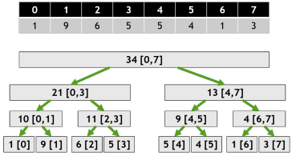

線段樹
大師寫的二元樹
題目：https://codeforces.com/group/f0XUnFzgmg/contest/539362/problem/F
#include <bits/stdc++.h>
#define Weakoying ios::sync_with_stdio(0), cin.tie(0), cout.tie(0);
#define int long long
#define ll long long
#define pii pair<int, int>hi
#define vi vector<int>
#define vii vector<pair<int, int>>
#define pqueue priority_queue
#define pb push_back
#define F first
#define S second
// #define max(a, b) (a > b ? a : b)
// #define min(a, b) (a < b ? a : b)
#define cmax(a, b) a = (a > b ? a : b)
#define cmin(a, b) a = (a < b ? a : b)
#define put(x) cout << x << endl;
#define DB(x) cerr << #x << " " << x << endl
#define all(v) v.begin(), v.end()
#define stop system("pause");
#define MEM(x, n) memset(x, n, sizeof(x));
#define lowbit(x) x &(-x)
#define SZ(v) ((int)v.size())
#if !LOCAL
#define endl "\n"
#pragma GCC optimize("Ofast", "unroll-all-loops")
#endif
const int INF = 0x3f3f3f3f;
const ll INFLL = 0x3f3f3f3f3f3f3f3f;
const int P = 1e9+7;
using namespace std;
/******************************************************************************/
#define MAXN 200005
#define MAXM 1000005
int n, q;
// seg1: status = 1: even +, odd -
// seg2: status = -1: even -, odd +
struct Node {
int sum, pre, suf, mx, tag, status;
Node(): sum(0), pre(0), suf(0), mx(0), tag(0) {}
Node(int status): sum(0), pre(0), suf(0), mx(0), tag(0), status(status) {}
void update(int val, int l, int r) {
int flag;
if (l % 2 == 0 && r % 2 == 0)
flag = 1;
else if (l % 2 == 1 && r % 2 == 1)
flag = -1;
else
flag = 0;
flag *= status;
sum += val * flag;
if (l % 2 == 0)
pre += val * (status == 1);
else
pre += val * (status == -1);
if (r % 2 == 0)
suf += val * (status == 1);
else
suf += val * (status == -1);
if (l != r || flag == 1)
mx += val;
tag += val;
}
Node operator +(const Node rhs) {
Node ret(status);
ret.sum = sum + rhs.sum;
ret.pre = max(pre, sum + rhs.pre);
ret.suf = max(rhs.suf, suf + rhs.sum);
ret.mx = max({mx, rhs.mx, suf + rhs.pre});
return ret;
}
void operator *=(const Node rhs) {
sum = rhs.sum;
pre = rhs.pre;
suf = rhs.suf;
mx = rhs.mx;
}
};
template<typename T>
struct Segment_Tree {
vector<T> arr;
int status;
Segment_Tree(int status): status(status) {}
void init() {
arr.resize(MAXN << 2, Node(status));
}
void push(int i, int l, int r) {
if (l == r || arr[i].tag == 0)
return;
int mid = (l + r) / 2;
arr[i * 2].update(arr[i].tag, l, mid);
arr[i * 2 + 1].update(arr[i].tag, mid + 1, r);
arr[i].tag = 0;
}
void update(int ql, int qr, int val, int i = 1, int l = 1, int r = n) {
if (ql <= l && r <= qr) {
arr[i].update(val, l, r);
return;
}
if (l > qr || r < ql)
return;
int mid = (l + r) / 2;
push(i, l, r);
update(ql, qr, val, i * 2, l, mid);
update(ql, qr, val, i * 2 + 1, mid + 1, r);
arr[i] *= arr[i * 2] + arr[i * 2 + 1];
}
T query(int ql, int qr, int i = 1, int l = 1, int r = n) {
if (ql <= l && r <= qr)
return arr[i];
if (l > qr || r < ql)
return T();
push(i, l, r);
int mid = (l + r) / 2;
auto q1 = query(ql, qr, i * 2, l, mid);
auto q2 = query(ql, qr, i * 2 + 1, mid + 1, r);
auto tmp = q1 + q2;
return q1 + q2;
}
};
Segment_Tree<Node> seg1(1);
Segment_Tree<Node> seg2(-1);
void sol() {
cin >> n >> q;
seg1.init();
seg2.init();
int flag1 = 1, flag2 = -1;
for (int i = 1; i <= n; i++) {
int x;
cin >> x;
seg1.update(i, i, x);
seg2.update(i, i, x);
flag1 *= -1;
flag2 *= -1;
}
while (q--) {
int op, l, r, x;
cin >> op >> l >> r;
if (op == 1) {
cin >> x;
seg1.update(l, r, x);
seg2.update(l, r, x);
}
else {
auto q1 = seg1.query(l, r);
auto q2 = seg2.query(l, r);
cout << max(q1.mx, q2.mx) << endl;
}
}
}
signed main() {
Weakoying;
int t = 1;
//while (cin >> t)
{
while (t--) {
sol();
}
}
return 0;
}
線段樹
from 2024 IONC
簡介
以二元樹為基本架構
線段樹可以在對數時間 \(O(log n)\) 內完成「某一區間的」
* 寫入資料
* 查詢資料(某運算)
* 修改資料
先看到題目：
有一個數列 \(a_1, a_2, a_3, \cdots, a_n\)，想對這個數列做一些事：
sum L R: 計算 \(a_L + a_{L+1} + \cdots + a_R\)
add P V: 將 \(a_P\) 的值加上整數 \(V\)
\(n, q \leq 10^6\)，\(q\) 是操作數量。
我們先假設\(a_1, a_2, a_3, \cdots, a_n\) 為 \({1,9,6,5,5,4,1,3}，n=8\)

我們先看線段樹如何運作
查詢區間和
假設我們要計算加總的範圍為 \([1,4]\) 。
用dfs查找，button傳遞答案
更新數據
假設我們修改的位置為 \(4\) 。
用dfs查找，button傳遞修改
二元樹的特性
實作前我們需要先知道二元樹的特性
- 一個父節點有兩個子節點
- 如果把一顆完整的二元樹編號，根節點為1，父節點為x，則左子節點為2*x，右子節點為2*x+1。如圖一
- 當資料量為n時(葉節總數量為n)，總節點數為 n*2-1。如圖一
圖一：四層二元樹
graph TD;
A[1] --> B[2];
A --> C[3];
B --> D[4];
B --> E[5];
C --> F[6];
C --> G[7];
D --> H[8];
D --> I[9];
E --> J[10];
E --> K[11];
F --> L[12];
F --> M[13];
G --> N[14];
G --> O[15];我們可以使用一維陣列儲存不同節點的值。
那麼問題來了，儲存二元樹的陣列大小要設定多少呢？
你可能會想：
「根據特性，完整的二元樹總節點數為 \(n*2-1\) ，那就設定為 \(2n\) 吧。」
萬萬不可！！看到圖二，原陣列數量 \(n=6\) 但卻超過的 \(2n\) 最大值為 \(13\)
圖二： \(n=6\) 的二元樹，綠色為儲存底層資料位置
v={1,2,3,4,5,6};
graph TD;
A1[1:21] --> A2[2:6]
A1 --> A3[3:15]
A2 --> A4[4:3]
A2 --> A5[5:3]
A3 --> A6[6:9]
A3 --> A7[7:6]
A4 --> A8[8:1]
A4 --> A9[9:2]
A5 --> A10[10:0]
A5 --> A11[11:0]
A6 --> A12[12:4]
A6 --> A13[13:5]
A7 --> A14[14:0]
A7 --> A15[15:0]
A8 --> A16[16:0]
A8 --> A17[17:0]
A9 --> A18[18:0]
A9 --> A19[19:0]
A10 --> A20[20:0]
A10 --> A21[21:0]
A11 --> A22[22:0]
A11 --> A23[23:0]
style A5 fill:#cfc
style A7 fill:#cfc
style A8 fill:#cfc
style A9 fill:#cfc
style A12 fill:#cfc
style A13 fill:#cfc於是，我們不能設定太小，設定為 \(4n\) 。(我也不知道為何，多方資料都說這是安全的大小
宣告
int seg[4*N];
線段樹分成三個主要的部份，以及兩個操作函數：
- Build：建立線段樹
- pull()：合併節點，線段樹最關鍵的步驟
- Query：查詢線段樹
- Modify：修改線段樹
- push()：下放節點，於下小節才會使用
接下來一一介紹不同部分
Build(創造線段樹)
使用dfs進入左右子節點，最後用button傳遞每個節點的sum
void build(int l, int r, int id = 1) {//l:子樹左邊界 r:子樹右邊界 id:子樹id
if (l == r) { //如果找到底層，放入原本陣列資料
seg[id] = v[l];
return;
}
int m = (l + r) / 2; //找到中間進行分割
build(l, m, id * 2); //進入左子節點
build(m + 1, r, id * 2 + 1); //進入右子節點
seg[id] = seg[id*2]+seg[id*2+1];//buttonup 子樹累積的sum，父節點為兩個子節點的和
}
pull(合併節點)
在 build 的最後部分 seg[id] = seg[id*2]+seg[id*2+1]; 是為了合併節點資訊，因為操作不一定是相加，也可能是相減，或是取min，也因為不只有 build會需要合併節點，所以將其製作為一個函數。
pull函數：
void pull (int id){ //id:子樹id
seg[id] = seg[id*2]+seg[id*2+1]; // 不一定是加法
}
於是可以將build函數更改如下：
void build(int l, int r, int id = 1) {
if (l == r) {
seg[id] = v[l];
return;
}
int m = (l + r) / 2;
build(l, m, id * 2);
build(m + 1, r, id * 2 + 1);
pull(id);
}
Query(查詢線段樹)
int query(int ql, int qr, int l, int r, int id = 1) { //ql:查詢的左邊界 qr:查詢的右邊界 l:子樹左邊界 r:子樹右邊界 id:子樹id
if (qr < l || r < ql) return 0; //範圍內無答案，丟掉，停止遞迴
if (ql <= l && r <= qr) return seg[id]; //範圍屬於答案之一，回傳數值，停止遞迴
int m = (l + r) / 2;
//範圍內有答案，進入遞迴
return query(ql, qr, l, m, id * 2) + query(ql, qr, m + 1, r, id * 2 + 1);
}
- \(r < ql\) 或 \(qr < l\)：這種情況表示當前節點的區間 \([l, r]\) 和要查詢的區間 \([ql, qr]\) 完全沒有交集。此時可以根據題目的要求決定回傳值，例如本題是查詢區間總和因此可以 \(return \ 0\)。
- \(ql \le l\) 且 \(r \le qr\)：此時當前節點的區間正好被要查詢的區間完全包含，直接 \(return\) 當前節點的紀錄的區間值即可。
- 其他情況：除了上述兩種情況外，剩下的情況就是當前節點的區間 \([l, r]\) 和要查詢的區間 \([ql, qr]\) 有交集但是沒有完全包含，此時直接遞迴兩邊再合併答案即可。如此不斷遞迴下去最終一定會變成前面兩種情況。
以下為查詢區間和的影片
Update(更新數據)
將第 \(p\) 個資料修改成 \(v\)。與前面的 build 很像，先找出第 \(p\) 個資料所在的位置，再由下而上的更新線段樹。同樣的更新節點也只需要花費 \(\mathcal{O}(\log n)\) 的時間。但比暴力方法的 \(\mathcal{O}(1)\) 還要差。
void update(int p, int v, int l, int r, int id = 1) {//p:目標物位置 v:修改的數值 l:子樹左邊界 r:子樹右邊界 id:子樹id
if (p < l || r < p) return; //範圍內無目標位置，不進入遞迴
if (l == r) { //找到目標位置，修改
seg[id] = v;
return;
}
int m = (l + r) / 2;
update(p, v, l, m, id*2); //到左子節點
update(p, v, m + 1, r, id*2+1); //到右子節點
pull(id); //合併子節點資訊到父節點
}
這樣我們就完成了第一階段，了解了線段樹的基本架構。
* 寫入資料 \(O(n)\)
* 查詢資料(某運算) \(O(log (n))\)
* 修改資料 \(O(log (n)))\)
目前完整代碼：
#include<bits/stdc++.h>
using namespace std;
#define MAXN 100
int seg[4*MAXN];
int n=0;
vector<int>v;
void pull (int id){
seg[id] = seg[id*2]+seg[id*2+1];
}
void build(int l, int r, int id = 1) {
if (l == r) {
seg[id] = v[l];
return;
}
int m = (l + r) / 2;
build(l, m, id * 2);
build(m + 1, r, id * 2 + 1);
pull(id);
}
int query(int ql, int qr, int l, int r, int id = 1) {
if (qr < l || r < ql) return 0;
if (ql <= l && r <= qr) return seg[id];
int m = (l + r) / 2;
return query(ql, qr, l, m, id * 2) + query(ql, qr, m + 1, r, id * 2 + 1);
}
void update(int p, int v, int l, int r, int id = 1) {
if (p < l || r < p) return;
if (l == r) {
seg[id] = v;
return;
}
int m = (l + r) / 2;
update(p, v, l, m, id*2);
update(p, v, m + 1, r, id*2+1);
pull(id);
}
int main() {
v={1,9,6,5,5,4,1,3};
n=v.size();
build(0,n-1);
cout<<query(1,4,0,n-1)<<"\n"; //查詢[1,4]
update(4,8,0,n-1); //修改[4]的 5 為 8
cout<<query(1,4,0,n-1); //查詢[1,4]
}
剛提到：
* 寫入資料 \(O(n)\)
* 查詢資料 \(O(log (n))\)
* 修改資料 \(O(log (n)))\)
可以看到修改資料的速度為\(O(log (n)))\)，那假設我們需要修改一個區間的資料，速度不就是\(O((n)log (n)))\)？這比暴力法還糟糕。
如果我們能把一些事情先不要做，放到晚點真正需要的時候再做會不會更快？這就是懶惰標記的精神！
說簡單一點，就是用 top down 的方式來修改數值。如果詢問的區間不需要到最底層，就不修改最底層數值，不做多餘的事情。
假設指令為：將 \([3,5]\) 區間所有數字加上 \(5\)
第一步：
進入根遞迴，變更數值，傳遞標籤至子節點
指令中，區間為 \([3,5]\) 也就是總共有 \(5-3+1=3\) 個節點會加 \(5\) ，那麼總共會加多少呢？
答案是(被更改節點數)*(增加數值)，也就是 \(3*5=15\) 。
更新完根節點數值後，把根節點的tag清除，傳遞tag給子節點 。
graph TD;
A[34+15=49：0,7 tag=0] --> B[21：0,3 tag=5]; A --> C[13：4,7 tag=5];
B --> D[10：0,1 tag=0]; B --> E[11：2,3 tag=0];
C --> F[9：4,5 tag=0]; C --> G[4：6,7 tag=0];
D --> H[1：0 tag=0]; D --> I[9：1 tag=0];
E --> J[6：2 tag=0]; E --> K[5：3 tag=0];
F --> L[5：4 tag=0]; F --> M[4：5 tag=0];
G --> N[1：6 tag=0]; G --> O[3：7 tag=0];
style B fill:#00ff00
style C fill:#00ff00
style K fill:#7efffd
style L fill:#7efffd
style M fill:#7efffd接下來假設要查詢 \([4,6]\) 區間總和，直接看的話，我們其實需要的是 \([4、5]\) 區間的值，以及\([6]\)的值，如下圖紅色區域
graph TD;
A[34+15=49：0,7 tag=0] --> B[21：0,3 tag=5]; A --> C[13：4,7 tag=5];
B --> D[10：0,1 tag=0]; B --> E[11：2,3 tag=0];
C --> F[9：4,5 tag=0]; C --> G[4：6,7 tag=0];
D --> H[1：0 tag=0]; D --> I[9：1 tag=0];
E --> J[6：2 tag=0]; E --> K[5：3 tag=0];
F --> L[5：4 tag=0]; F --> M[4：5 tag=0];
G --> N[1：6 tag=0]; G --> O[3：7 tag=0];
style B fill:#00ff00
style C fill:#00ff00
style K fill:#7efffd
style L fill:#7efffd
style M fill:#7efffd
style F fill:#ff2600
style N fill:#ff2600接下來直接DFS查詢數值，在往下查詢時順便傳遞tag